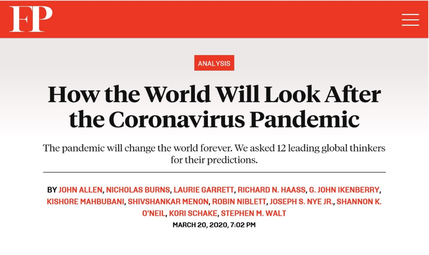
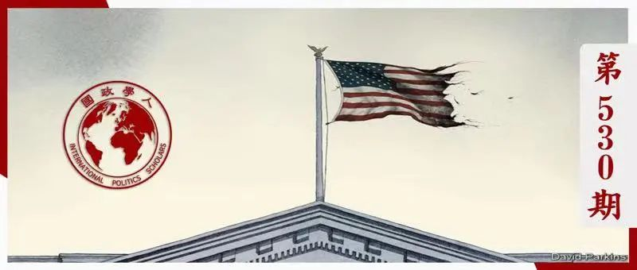
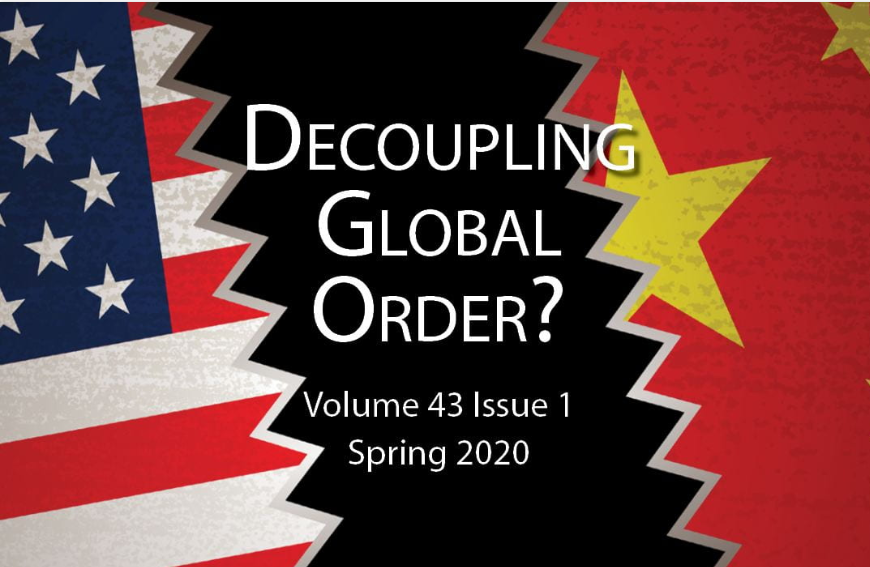
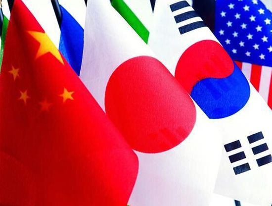
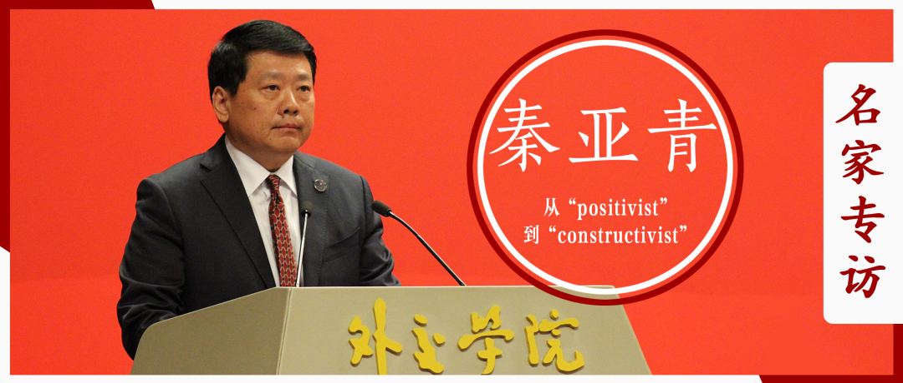

收录于合集 #年度精选 4个

国政学人年度十大文章精选
1.3月26日
【重磅】约瑟夫·奈等预测：新冠疫情之后，世界将何去何从？ ****
【来源】 “How the World Will Look After the Coronavirus Pandemic.” Foreign Policy , March 20, 2020.
【编译】 董骁天 李源 金琳 房宇馨 刘潇昱 刘瑛琛
【内容提要】
与柏林墙倒塌或雷曼兄弟倒闭一样，新冠疫情是一个震惊世界的事件，其深远的后果我们今天仅能开始想象。但有一点是肯定的：它将导致政治和经济权力的永久性转变。为了帮助我们理解在这场危机爆发之际我们脚下这片土地正在发生的变化，Foreign Policy邀请了来自世界各地的12位思想家谈一谈他们对疫情后全球秩序的预测。
【原文链接】

【重磅】约瑟夫·奈等预测：新冠疫情之后，世界将何去何从？| 国政学人 第362期
2.4月5日
**【重磅评论】亨利·基辛格： ******
新冠病毒大流行将永远改变世界秩序
【作者】 亨利·基辛格（Henry Alfred Kissinger），美国著名外交家、国际问题专家，曾任美国尼克松政府国家安全事务助理、国务卿、福特政府国务卿。
【来源】 《华尔街日报》2020年4月3日
【编译】 李思（国政学人编译员，韩国首尔大学国际区域学）
姚寰宇（国政学人编译员，山东大学国际政治硕士研究生）
【内容提要】
我们从硝烟四起的世界大战中走来，步入了一个日益繁荣、人类尊严得到提升的世界。如今，我们生活在一个划时代时期。领导人们所面临的历史性挑战，是在管理危机的同时建设未来。而一旦失败，世界将陷入深渊。
【原文链接】
【重磅评论】亨利·基辛格：新冠病毒大流行将永远改变世界秩序 | 国政学人 第370期
3.11月4日
**【美国研究】特朗普的重大失误：
**
美国正在让中国再次伟大
【作者】 法拉赫·简(Farah N. Jan)，宾夕法尼亚大学国际关系学讲师；科尔比·卡勒(Kolby Kaller)，宾夕法尼亚大学国际关系项目学生，也是佩里世界之家(Perry World House)的学生研究员。
【来源】 Farah N. Jan, Kolby Kaller, “Trump’s Big Mistake: America Is Making China Great Again,” The National Interest , October 31, 2020, https://nationalinterest.org/blog/coronavirus/trumps-big-mistake-america- making-china-great-again-171773.
【编译】 常佳艺（国政学人编译员，北京大学国际关系学院本科生）
【内容提要】
四年前，特朗普借助“美国优先”、“让美国再次伟大”等旗帜鲜明的口号，成功入主白宫。然而，四年来，“美国优先”逐渐变成“美国落单”，试图“让美国再次伟大”的孤立主义与单边主义外交政策反而凸显了中国的国际地位。曾作为世界秩序领导者的美国开始频繁缺席各类国际合作，而长期远离世界舞台中心的中国却扮演着越来越关键的角色，这一转变趋势在新冠疫情期间得到了更加淋漓尽致的体现。在美国总统大选这一特殊的时间点上，作者强调，无论结果如何，新一任政府必须扭转现状，通过加强国际合作改善美国声誉、重塑其领导力。
【原文链接】

【美国研究】特朗普的重大失误：美国正在让中国再次伟大 | 国政学人 第530期
4.3月29日
【重磅评论】格雷厄姆·艾利森：
抗击新冠病毒：中国是敌是友？
【作者】
格雷厄姆·艾利森(Graham Allison)
美国哈佛大学约翰·F·肯尼迪政府学院教授、首任院长，于哈佛大学任教50年，是国家安全分析领域的领军人物。政治与国际关系理论家，提出修昔底德陷阱 (英语：Thucydides’s Trap) 一词。曾担任美国总统里根国防特别顾问，之后于美国总统比尔·克林顿任内担任国防计划助理部长。著有《注定一战：中美能避免修昔底德陷阱吗？》，研究方向包括：核武器、俄罗斯、中国和政治决策。
克里斯托弗·李(Christopher Li)
贝尔弗科学与国际事务中心(Belfer Center for Science and International Affairs)研究助理，研究重点为中国外交政策、亚太安全以及科技。他与格雷厄姆·艾利森(Graham Allison)在《避免大国战争》(Avoiding Great Power War)项目中合作（该项目考察美中战略竞争和中国历史与政治），负责协调该项目的中国工作组。此外，他为中国网络政策倡议(China Cyber Policy Initiative)做出诸多贡献，包括担任美中第二轨道对话(US-China Track II dialogue)翻译一职。Chris还支持前国防部长Ash Carter的生物技术投资组合，该项目研究新兴技术如何以服务于整体公共利益的方式开发和管理。
【来源】
https://nationalinterest.org/feature/war-against-coronavirus-china- foe%E2%80%94or-friend-138387
【编译】 朱曈菲（国政学人编译员，伦敦大学国王学院硕士毕业生）
【内容提要】
美国和中国能在同一时间内既成为无情的对手，又成为亲密的伙伴吗?同时持有两个看似矛盾的想法是很困难的。但是，要想成功地击败这个病毒，所需要的不过如此。
【原文链接】
【重磅评论】格雷厄姆·艾利森：抗击冠状病毒：中国是敌是友？| 国政学人 第364期
5.4月6日
【重磅评论】约瑟夫·奈：新冠疫情视角下的中美安全战略走向 ****
【作者】 Joseph S. Nye Jr.（约瑟夫·奈）美国著名国际政治学者、哈佛大学肯尼迪政府学院教授。国际关系理论中新自由主义学派的代表人物，因最早提出“软实力”（Soft Power）概念而闻名。
【来源】 美国《国家利益》杂志网站 2020年4月3日，
https://nationalinterest.org/feature/why-coronavirus-making-us-china- relations-worse-139457
【编译】 戴赟（国政学人编译员，外交学院硕士生）
【内容提要】
在新冠病毒于一月份出现之前，中美关系已陷入困境。现如今，冠状病毒危机使得双方关系日渐愈下，这对双方领导人来说都是考验。
【原文链接】
【重磅评论】约瑟夫·奈：新冠疫情视角下的中美安全战略走向 | 国政学人 第371期
6.4月29日
【中美关系】麦艾文：中美关系的基本原则正在变化 ****
【作者】 麦艾文（Evan S. Medeiros），乔治敦大学外交学院亚洲研究的彭纳家族主席，曾任美国国家安全委员会亚洲高级主任（2013-2015），是奥巴马政府亚洲再平衡战略的关键缔造者。麦艾文是美国兰德公司学者出身，研究领域主要有东亚国际政治、中国外交和国家安全政策、中美关系。
【来源】 Evan S. Medeiros, The Changing Fundamentals of U.S. China Relations, the Washington Quarterly, Vol. 42, No. 3, 2019, pp. 93-119.
【编译】 刘颖哲（国政学人编译员，对外经济贸易大学国际关系学院本科生）
【内容提要】
作者认为中美关系可能已经到了一个关键的转折点，由此提出了一些有关两国关系发展历程及前景的根本性问题：当前紧张局势的根源是什么？哪些会持续，哪些会因两国国内的政治和（或）经济变化而改变？这在多大程度上取决于中美现任领导人的决定？中美关系在未来可能有怎样的轨迹，美国应该如何应对？
为了解决上述问题，本文考察了中美关系核心的变化动态。随着中美关系进入第五个十年，中国正崛起为全球大国，中美关系的许多驱动因素正在演变，并朝着更具竞争力的方向发展。简而言之，反感、不信任、竞争和波动对中美关系来说并不新鲜，但两国在其中的相对角色一直在改变。
本文考察了两个基本问题，一是加剧竞争的驱动与加速因素，二是抑制竞争的缓冲与稳定因素。本文前两部分将驱动因素与加速因素分为结构性的和周期性的，以更好地理解其来源、表现和影响。第三部分概述了缓冲与稳定因素的无常性。最后为决策者提供了一些综合注意事项。
【原文链接】
【中美关系】麦艾文：中美关系的基本原则正在变化 | 国政学人 第395期
7.11月5日
【美国大选】拜登：为什么美国必须再次领导世界—拯救特朗普之后的美国外交政策 ****
【作者】 小约瑟夫·拜登（JOSEPH R. BIDEN, JR.），美国民主党政治家，前美国副总统（2009-2017），美国第110届国会参议院外交委员会主席，且曾经担任参议院司法委员会主席，目前拜登为候任美国总统。
【来源】 Joseph R. Biden, Jr., “Why America Must Lead Again? Rescuing U.S. Foreign Policy After Trump,” Foreign Affairs , Vol. 22, No. 2, 2020, pp. 64-76.
【编译】 施榕（国政学人编译员，北京大学国际关系学院博士生）
【内容提要】
几乎不管用什么测量方法，自2017年1月20日奥巴马总统和我离任之后，美国的信誉和影响力都在下降。特朗普总统贬低、削弱甚至在某些情况下还抛弃了美国的盟友和伙伴。他出乎意料地向我们的情报人员、外交官和军队发难。他挥霍了我们应对国家安全挑战的筹码，但实际上却没有任何成果。他对美国的朋友和对手都发起了不明智的贸易战，损害了美国的中产阶级。他已经放弃了美国在动员集体行动以应对新威胁上的领导地位，尤其是那些本世纪独有的威胁。最重要的是，他背离了赋予我们国家力量、将我们作为一个民族团结起来的民主价值观。
与此同时，美国面临的全球挑战——从气候变化和大规模移民到技术破坏和传染病——已经变得更加复杂和紧迫，而威权主义、民族主义和非自由主义的快速发展削弱了我们集体应对这些挑战的能力。民主——因党派之争而瘫痪、因腐败而蹒跚、因极度的不平等而备受压迫——正经历着难以满足人民需求的艰难时期。人们对民主制度的信任在下降，对“他者”的恐惧在上升。美国精心构建的国际体系正在分崩离析。特朗普和世界各地那些蛊惑民心的政客为了自己个人的政治利益却仍未悬崖勒马。对下一任美国总统而言，收拾（特朗普留下的）残局将是一项艰巨的任务。他或她将不得不挽救我们的声誉，重建人们对我们领导能力的信心，动员我们的国家和盟友迅速应对新的挑战，这已经迫在眉睫了。
若我成为总统，我将立即采取措施复兴美国的民主和联盟体系，保护美国的经济前途，并再次让美国领导世界。现在不是恐惧的时候，而是要发挥我们的力量和大无畏精神的时候，正是这种力量和大无畏精神使我们赢得了两次世界大战的胜利，并拉下了铁幕。民主和自由主义战胜了法西斯主义和独裁统治，创造了自由世界。但这场竞赛不仅定义了我们的过去。它也将定义我们的未来。
【原文链接】
【美国大选】拜登：为什么美国必须再次领导世界—拯救特朗普之后的美国外交政策 | 国政学人 第351期
8.4月16日
【重磅】约瑟夫·奈：权力和与中国的相互依赖 ****
【作者】 Joseph S. Nye Jr.（约瑟夫·奈），美国著名国际政治学者、哈佛大学肯尼迪政府学院教授。国际关系理论中新自由主义学派的代表人物。
【来源】 Joseph S. Nye Jr. (2020) Power and Interdependence with China, The Washington Quarterly , 43(1), 7-21.
【编译】 石雨宸（国政学人编译员，南开大学周恩来政府管理学院本科生）；夏博阳（华侨大学新闻与传播学院硕士生）
【内容提要】
约瑟夫•奈解读当前中美关系中的权力与相互依赖，再次探讨了中美关系陷入修昔底德陷阱与金德尔伯格陷阱的可能性。
【原文链接】

【重磅】约瑟夫·奈：权力和与中国的相互依赖 | 国政学人 第385期
9.11月12日
【名家专访】国政学人对话唐世平教授：关怀是终极动力 ****
【采访者】
姚寰宇 山东大学东北亚学院国际政治专业硕士研究生 国政学人编译员
吕紫烟 山东大学东北亚学院国际政治专业本科生 国政学人编译员
赵怡雯 山东大学东北亚学院国际政治专业本科生 国政学人编译员
【内容提要】
唐世平教授有着丰硕的学术成果、传奇的经历、鲜明的个性，是当今中国乃至世界社会科学学界最有创造力的学者之一。在涉足计算社会科学领域后，唐世平教授带领的团队完成了包括本次美国大选在内连续多次选举活动的精准预测，这更是再次让他走向“神位”。
一次次的转型背后，唐世平教授经历了怎样的心路历程？选举预测技术的进步对社会科学的发展意味着什么？社会科学的从业者如何做出好的研究？对于年轻的国政学人们，唐世平教授又有着怎样的寄语？“国政学人·名家专访”第一期带大家走近唐世平教授。
【原文链接】
10.4月15日
**【中美关系】不忠的盟友？中国领导的国际制度中的美国安全扈从国 ******
【作者】 Kim Dong Jung，耶鲁-新加坡国立大学学院（Yale-NUS College）助理教授。
【来源】 Dong Jung Kim, Unfaithful allies? US security clients in China-led international institutions, International Relations of the Asia-Pacific , Volume 20, Issue 1, January 2020, Pages 61–90, https://doi.org/10.1093/irap/lcy015
【编译】 张曼娜（国政学人编译员，吉林大学公共外交学院本科生）
【内容提要】
二战后，美国建立了高度制度化的国际秩序。在加强经济与安全制度设计的同时，美国也通过为扈从国提供安全承诺，有意维持一个多层次的联盟体系，换取其对美国领导的国际秩序的积极参与。然而近年来美国的几个盟友对中国领导的国际制度的积极参与，直接挑战了这一联盟体系。
霸权挑战国领导怎样的制度会受到美国安全扈从国的支持呢？又有哪些美国安全扈从国会支持呢？国际制度建设一直是霸权竞争的重要组成部分，特别是在后冷战时代，赢得国际合法性对于获得领导地位至关重要。因此，美国安全扈从国积极参与霸权挑战国主张的制度，不仅会损害美国领导的国际秩序的制度基础，还可能导致安全扈从国与美国之间的信任破裂。
本文认为，要理解美国安全扈从国对霸权挑战国所倡议的国际制度的支持，有两个因素至关重要：(1) 挑战国所领导的制度的性质，(2) 扈从国在地区安全环境中的战略地位。当挑战国领导的制度是旨在对美国领导的制度框架进行补充而不是与之竞争时，面临分散的安全关切的扈从国更有可能对其进行支持。相比之下，当挑战国领导的制度旨在与以美国领导的制度进行竞争时，受到挑战国所带来的明确安全关切的扈从国则不会对其进行支持。
【原文链接】

【中美关系】不忠的盟友？中国领导的国际制度中的美国安全扈从国 | 国政学人 第384期
重磅访谈
**【巅峰访谈】唐世平教授专访秦亚青教授：从“实证主义者”到“建构主义者” ******
【参与】 秦亚青教授、唐世平教授、国政学人
【受访人】
秦亚青： 中国国际关系学家，曾任外交学院院长，同时担任外交部外交政策咨询委员会委员，中国国际关系学会副会长，比利时皇家学院外籍院士，东盟10+3东亚思想库网络中国国家协调员。秦亚青教授研究领域广泛，是第一位将国际关系领域的建构主义流派引入中国的学者。他的最新英文著作是A Relational Theory of World Politics（《世界政治的关系理论》）（Cambridge University Press，2018）。
** 【采访人】**
唐世平： 复旦大学特聘教授、陈树渠讲席教授、教育部“长江学者”特聘教授。他的Social Evolution of International Politics (《国际政治的社会演化》）（牛津大学出版社，2013年）于2015年获得国际研究协会（ISA）的“年度最佳著作”奖。他是获得这一奖项的第一位中国学者和第一位亚洲学者。他的最新英文专著是On Social Evolution: Phenomenon and Paradigm（《论社会演化：现象与范式》）（Routledge, 2020）。他还是“掌中星球”新一代旅游商业平台的创始人兼CEO。
【原文链接】

【巅峰访谈】唐世平教授专访秦亚青教授：从“实证主义者”到“建构主义者”

好好学习，天天“在看”
国政学人
支持学术公益与知识传播
微信扫一扫赞赏作者 __赞赏
已喜欢，对作者说句悄悄话
取消 __
发送给作者
发送
最多40字，当前共字
上一页 1/3 下一页
长按二维码向我转账
支持学术公益与知识传播
受苹果公司新规定影响，微信 iOS 版的赞赏功能被关闭，可通过二维码转账支持公众号。